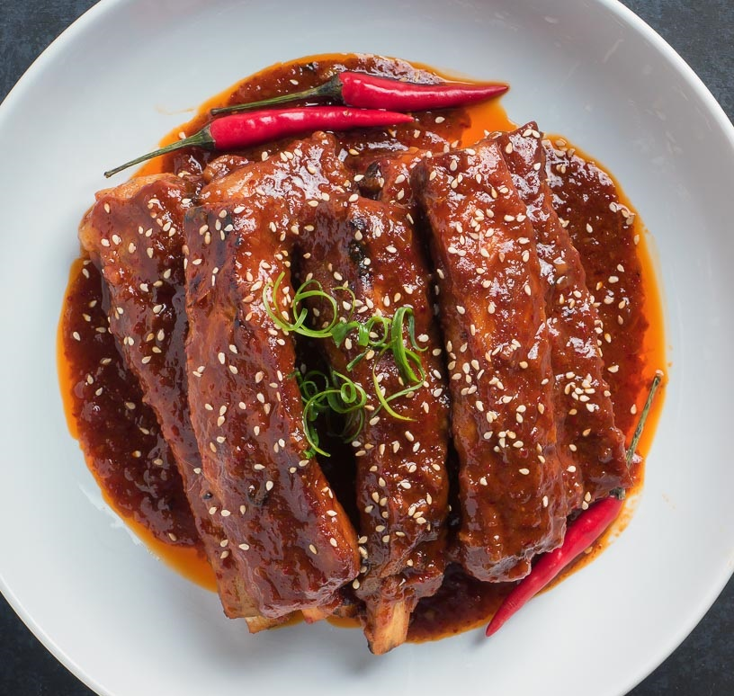

Korean Sweet and Spicy Pork Spareribs

Sticky, sweet, savory, and sour fall off the bone pork ribs
The ribs are tender and a little bit sweet, but sticky and spicy. Pair them with rice and they're hard to resist.
As you make the dish, note the difference between Korean-style spareribs and American-style ribs. This recipe for spicy Korean pork ribs contains soy sauce (for some good umami flavor), along with rice wine vinegar and mirin for sweetness and acidity. Finally, the marinade also contains some sugar and honey to make for an unforgettable flavor experience.
Ingredients
- 4 pounds pork spareribs, in serving-size pieces
- 1/3 cup soy sauce
- 3 tablespoons mirin
- 2 tablespoons rice wine vinegar
- 1/2 cup sugar
- 2 tablespoons honey
- 5 tablespoons gochujang, Korean chile pepper paste
- 1 sweet onion, minced
- 5 cloves garlic, minced
- 3 slices peeled fresh ginger, minced
- 2 teaspoons sesame oil
- 3 to 4 scallions, thinly sliced and cut on a bias, for garnish
Steps
- Gather the ingredients.
- In a large pot, bring water to a boil. Add ribs and simmer for about 30 minutes.
- Remove ribs from pot and place into a shallow glass or ceramic dish.
- Mix all seasonings together to make marinade.
- Pour mixture over meat, coating thoroughly.
- Turn meat over and cover and marinate for at least 2 hours. You can also marinate overnight.
- Cook meat on grill or in oven (meat-side up) for 25 to 30 minutes, turning several times and basting with marinade.
- The meat should be very tender. Depending on the thickness of the meat, you might need to cook ribs for a longer or shorter time. To serve, garnish with scallions.